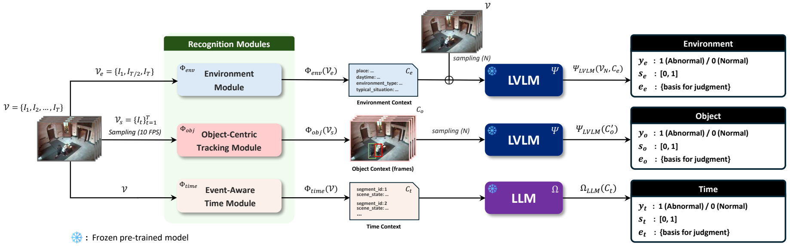
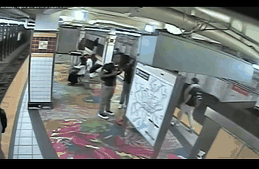
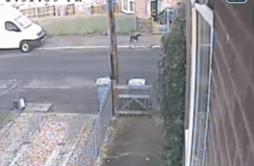
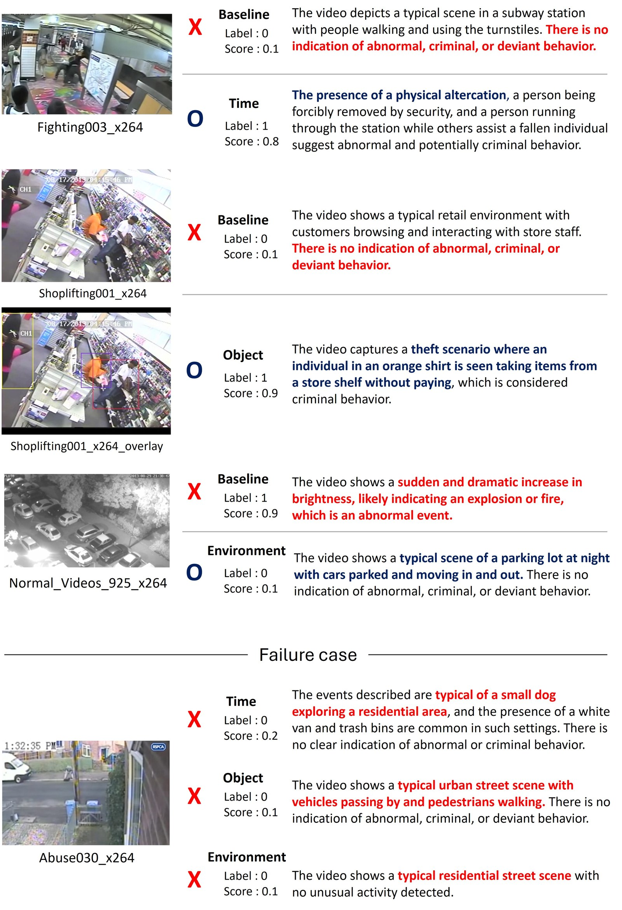

Environment Context
A multi-image LVLM summarizes representative keyframes to capture place, daytime, environment type, and typical scene affordances.
Camera-ready project page
Yonsei University | Queen Mary University of London | EPFL

Training video anomaly detectors is challenging due to the difficulty and cost of annotating diverse and rare abnormal events. Although recent large vision-language models enable training-free inference, existing approaches mostly rely on holistic inference over sampled video and may miss context-specific anomaly cues. We present CSI-VAD, a training-free video anomaly detector that identifies abnormal events across diverse contexts. The key idea is to decompose each video into three distinct contexts: environment, objects, and time. Experiments on UCF-Crime and UBnormal show that CSI-VAD consistently improves over the direct holistic baseline and achieves competitive performance against existing methods.
Each branch isolates a different source of anomaly evidence before the final score and label aggregation.

A multi-image LVLM summarizes representative keyframes to capture place, daytime, environment type, and typical scene affordances.
Detection and tracking overlays emphasize object locations, motion, and interactions while preserving the original scene.
Frame captions are segmented by semantic change and summarized into an ordered sequence of event states.
Context-structured inference improves over direct holistic LVLM inference across sampling budgets and evaluation protocols.
92.90
UCF-Crime AUC, Mean Ensemble, 256 frames
92.88
UCF-Crime AUC, Noisy-OR, 256 frames
86.08
UCF-Crime AUC under the recent protocol
72.16
UBnormal AUC, 32 frames
| Dataset | Frames | Baseline | Ours Max | Ours Mean | Ours Noisy-OR |
|---|---|---|---|---|---|
| UCF-Crime | 32 | 81.50 | 88.49 | 89.04 | 89.08 |
| UCF-Crime | 256 | 88.39 | 89.33 | 92.90 | 92.88 |
| UBnormal | 32 | 59.19 | 70.52 | 72.16 | 72.16 |
| UBnormal | 256 | 58.66 | 68.75 | 71.56 | 71.56 |
The examples below mirror the qualitative cases in the paper: time, object, and environment branches correct different holistic inference failures, while a brief missed event remains challenging.





The BibTeX entry will be updated when the public paper record is available.
@article{kim2026csivad,
title = {Context-structured Video Anomaly Detection with Large Vision-Language Models},
author = {Kim, Dongjun and Oh, Changjae and Cavallaro, Andrea and Mo, Jeonghoon},
year = {2026}
}